Last updated: 2025-07-03
Checks: 7 0
Knit directory: Fosl2tg_skin_lung/
This reproducible R Markdown analysis was created with workflowr (version 1.7.1). The Checks tab describes the reproducibility checks that were applied when the results were created. The Past versions tab lists the development history.
Great! Since the R Markdown file has been committed to the Git repository, you know the exact version of the code that produced these results.
Great job! The global environment was empty. Objects defined in the global environment can affect the analysis in your R Markdown file in unknown ways. For reproduciblity it’s best to always run the code in an empty environment.
The command set.seed(20250527) was run prior to running
the code in the R Markdown file. Setting a seed ensures that any results
that rely on randomness, e.g. subsampling or permutations, are
reproducible.
Great job! Recording the operating system, R version, and package versions is critical for reproducibility.
Nice! There were no cached chunks for this analysis, so you can be confident that you successfully produced the results during this run.
Great job! Using relative paths to the files within your workflowr project makes it easier to run your code on other machines.
Great! You are using Git for version control. Tracking code development and connecting the code version to the results is critical for reproducibility.
The results in this page were generated with repository version 9c2f652. See the Past versions tab to see a history of the changes made to the R Markdown and HTML files.
Note that you need to be careful to ensure that all relevant files for
the analysis have been committed to Git prior to generating the results
(you can use wflow_publish or
wflow_git_commit). workflowr only checks the R Markdown
file, but you know if there are other scripts or data files that it
depends on. Below is the status of the Git repository when the results
were generated:
Ignored files:
Ignored: .Rhistory
Ignored: .Rproj.user/
Untracked files:
Untracked: analysis/DE_myeloid.Rmd
Untracked: analysis/omnipathr-log/
Untracked: data/Lung/
Untracked: data/Skin/
Untracked: omnipathr-log/
Untracked: output/DE_myeloid/
Untracked: output/Lung_QC_integration_annotation/
Unstaged changes:
Deleted: .Rprofile
Note that any generated files, e.g. HTML, png, CSS, etc., are not included in this status report because it is ok for generated content to have uncommitted changes.
These are the previous versions of the repository in which changes were
made to the R Markdown
(analysis/Lung_QC_integration_annotation.Rmd) and HTML
(docs/Lung_QC_integration_annotation.html) files. If you’ve
configured a remote Git repository (see ?wflow_git_remote),
click on the hyperlinks in the table below to view the files as they
were in that past version.
| File | Version | Author | Date | Message |
|---|---|---|---|---|
| Rmd | 9c2f652 | GinoBonazza | 2025-07-03 | wflow_publish("analysis/Lung_QC_integration_annotation.Rmd") |
Setup
# Get current file name to make folder
current_file <- "Lung_QC_integration_annotation"
# Load libraries
library(here)
library(readr)
library(readxl)
library(xlsx)
library(Seurat)
library(DropletUtils)
library(Matrix)
library(scDblFinder)
library(scCustomize)
library(dplyr)
library(ggplot2)
library(magrittr)
library(harmony)
library(tidyverse)
library(reshape2)
library(S4Vectors)
library(SingleCellExperiment)
library(pheatmap)
library(png)
library(gridExtra)
library(knitr)
library(scales)
library(RColorBrewer)
library(Matrix.utils)
library(tibble)
library(ggplot2)
library(scater)
library(patchwork)
library(statmod)
library(clustree)
library(gprofiler2)
#Output paths
output_dir_data <- here::here("output", current_file)
if (!dir.exists(output_dir_data)) dir.create(output_dir_data)
if (!dir.exists(here::here("docs", "figure"))) dir.create(here::here("docs", "figure"))
output_dir_figs <- here::here("docs", "figure", paste0(current_file, ".Rmd"))
if (!dir.exists(output_dir_figs)) dir.create(output_dir_figs)Quality Control
sample_names <- c("Con1-SN1738",
"Con2-SN1846",
"Con3-SN1848",
"Fosl2tg1-SN1728",
"Fosl2tg2-SN1850",
"Fosl2tg3-SN1853")
cell_ids <- c("Con1_SN1738",
"Con2_SN1846",
"Con3_SN1848",
"Fosl2tg1_SN1728",
"Fosl2tg2_SN1850",
"Fosl2tg3_SN1853")Lung_preQC <- list()
for (sample in sample_names) {
Lung_preQC[sample] <- Read10X_h5(filename = here::here("data", "Lung", sample, "sample_feature_bc_matrix.h5"))
Lung_preQC[[sample]] <- CreateSeuratObject(Lung_preQC[[sample]], project = sample)
}
Lung_preQC <- merge(Lung_preQC[[sample_names[1]]], y = c(Lung_preQC[[sample_names[2]]],
Lung_preQC[[sample_names[3]]],
Lung_preQC[[sample_names[4]]],
Lung_preQC[[sample_names[5]]],
Lung_preQC[[sample_names[6]]]),
add.cell.ids = c(cell_ids[1],
cell_ids[2],
cell_ids[3],
cell_ids[4],
cell_ids[5],
cell_ids[6])
)Lung_preQC$Sample <- Lung_preQC$orig.ident
Lung_preQC[["percent.mt"]] <- PercentageFeatureSet(Lung_preQC, pattern = "^mt-")
Lung_preQC[["percent.rp"]] <- PercentageFeatureSet(Lung_preQC, pattern = "^Rp[sl]")
table(Lung_preQC$Sample)
Con1-SN1738 Con2-SN1846 Con3-SN1848 Fosl2tg1-SN1728 Fosl2tg2-SN1850
1166 883 817 722 281
Fosl2tg3-SN1853
886 Check quality control parameters
p1 <- VlnPlot(Lung_preQC, features = "nCount_RNA", group.by = "Sample", pt.size = 0) + theme(axis.title.x = element_blank()) + NoLegend()
p2 <- VlnPlot(Lung_preQC, features = "nFeature_RNA", group.by = "Sample", pt.size = 0) + theme(axis.title.x = element_blank()) + NoLegend()
p3 <- VlnPlot(Lung_preQC, features = "percent.mt", group.by = "Sample", pt.size = 0) + theme(axis.title.x = element_blank()) + NoLegend()
p4 <- VlnPlot(Lung_preQC, features = "percent.rp", group.by = "Sample", pt.size = 0) + theme(axis.title.x = element_blank()) + NoLegend()
QC_pre_VlnPlots <- p1 + p2 + p3 + p4 + plot_layout(ncol = 2)
QC_pre_VlnPlots
p1 <- VlnPlot(Lung_preQC, features = "nCount_RNA", group.by = "Sample", pt.size = 0, y.max = 20000) + theme(axis.title.x = element_blank()) + NoLegend()
p2 <- VlnPlot(Lung_preQC, features = "nFeature_RNA", group.by = "Sample", pt.size = 0, y.max = 5000) + theme(axis.title.x = element_blank()) + NoLegend()
p3 <- VlnPlot(Lung_preQC, features = "percent.mt", group.by = "Sample", pt.size = 0, y.max = 25) + theme(axis.title.x = element_blank()) + NoLegend()
p4 <- VlnPlot(Lung_preQC, features = "percent.rp", group.by = "Sample", pt.size = 0, y.max = 50) + theme(axis.title.x = element_blank()) + NoLegend()
QC_pre_VlnPlots_zoom <- p1 + p2 + p3 + p4 + plot_layout(ncol = 2)
QC_pre_VlnPlots_zoom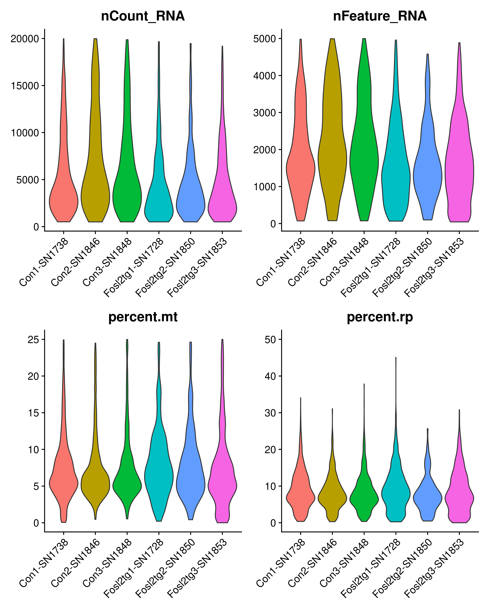
Doublets detection
Lung_preQC_sce <- as.SingleCellExperiment(Lung_preQC)
Lung_preQC_sce <- scDblFinder(Lung_preQC_sce, samples="Sample", clusters = TRUE)
table(Lung_preQC_sce@colData$scDblFinder.class)
singlet doublet
4521 234 Lung_preQC <- as.Seurat(Lung_preQC_sce, counts = "counts", data = "logcounts")
rm(Lung_preQC_sce)
Lung_preQC@meta.data[Lung_preQC@meta.data$scDblFinder.class %in% "singlet", "scDblFinder.n"] = paste0("Singlets (n=", table(Lung_preQC$scDblFinder.class)[1], ")")
Lung_preQC@meta.data[Lung_preQC@meta.data$scDblFinder.class %in% "doublet", "scDblFinder.n"] = paste0("Doublets (n=", table(Lung_preQC$scDblFinder.class)[2], ")")
Lung_preQC$scDblFinder.n <- factor(x = Lung_preQC$scDblFinder.n, levels = c(rownames(table(Lung_preQC$scDblFinder.n))[2], rownames(table(Lung_preQC$scDblFinder.n))[1])) p1 <- VlnPlot(Lung_preQC, features = c("nCount_RNA"), split.by = "scDblFinder.n", group.by = "Sample", pt.size = 0, y.max = 50000) + theme(axis.title.x = element_blank()) + NoLegend()
p2 <- VlnPlot(Lung_preQC, features = c("nFeature_RNA"), split.by = "scDblFinder.n", group.by = "Sample", pt.size = 0, y.max = 10000) + theme(axis.title.x = element_blank())
QC_pre_Doublets <- p1 + p2 + plot_layout(ncol = 2)
QC_pre_Doublets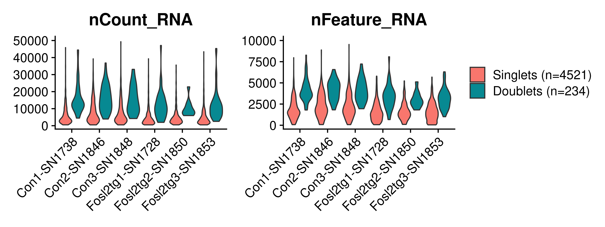
saveRDS(Lung_preQC,
here::here(output_dir_data, "Lung_preQC.rds"))Remove doublets
Lung_preQC_no_doublets <- subset(x = Lung_preQC, subset = scDblFinder.class == "singlet")
table(Lung_preQC_no_doublets@meta.data$scDblFinder.class)
singlet doublet
4521 0 rm(Lung_preQC)Check quality control parameters after removing doublets
p1 <- VlnPlot(Lung_preQC_no_doublets, features = "nCount_RNA", group.by = "Sample", pt.size = 0) + theme(axis.title.x = element_blank()) + NoLegend()
p2 <- VlnPlot(Lung_preQC_no_doublets, features = "nFeature_RNA", group.by = "Sample", pt.size = 0) + theme(axis.title.x = element_blank()) + NoLegend()
p3 <- VlnPlot(Lung_preQC_no_doublets, features = "percent.mt", group.by = "Sample", pt.size = 0) + theme(axis.title.x = element_blank()) + NoLegend()
p4 <- VlnPlot(Lung_preQC_no_doublets, features = "percent.rp", group.by = "Sample", pt.size = 0) + theme(axis.title.x = element_blank()) + NoLegend()
QC_pre_no_doublets_VlnPlots <- p1 + p2 + p3 + p4 + plot_layout(ncol = 2)
QC_pre_no_doublets_VlnPlots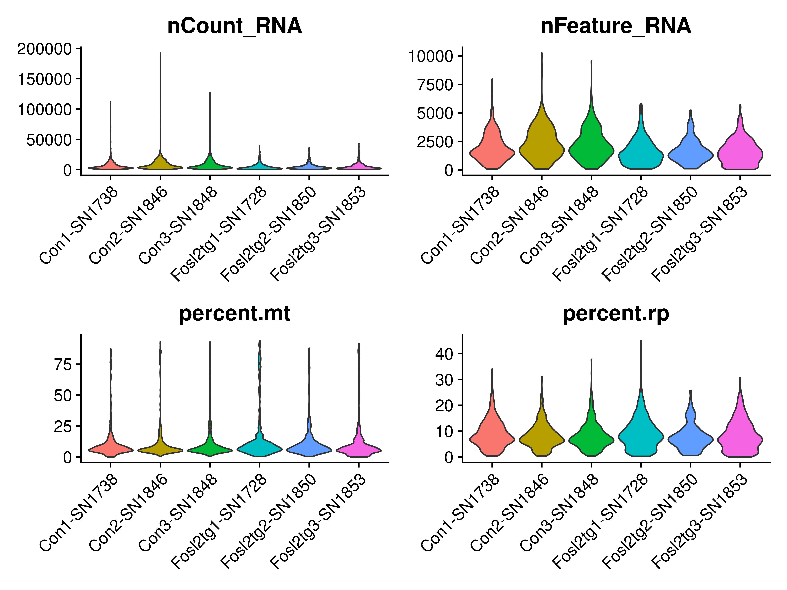
p1 <- VlnPlot(Lung_preQC_no_doublets, features = "nCount_RNA", group.by = "Sample", pt.size = 0, y.max = 20000) + theme(axis.title.x = element_blank()) + NoLegend()
p2 <- VlnPlot(Lung_preQC_no_doublets, features = "nFeature_RNA", group.by = "Sample", pt.size = 0, y.max = 5000) + theme(axis.title.x = element_blank()) + NoLegend()
p3 <- VlnPlot(Lung_preQC_no_doublets, features = "percent.mt", group.by = "Sample", pt.size = 0, y.max = 25) + theme(axis.title.x = element_blank()) + NoLegend()
p4 <- VlnPlot(Lung_preQC_no_doublets, features = "percent.rp", group.by = "Sample", pt.size = 0, y.max = 50) + theme(axis.title.x = element_blank()) + NoLegend()
QC_pre_no_doublets_VlnPlots_zoom <- p1 + p2 + p3 + p4 + plot_layout(ncol = 2)
QC_pre_no_doublets_VlnPlots_zoom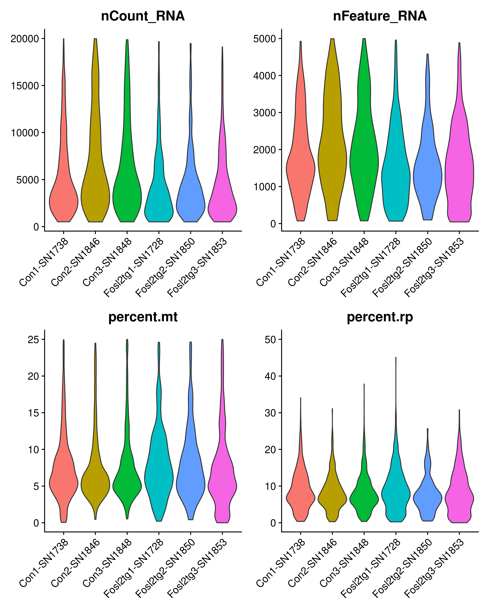
Filter based on number of counts, features and percentage of mitochondrial genes
Lung <- subset(Lung_preQC_no_doublets, subset =
nFeature_RNA > 200 &
percent.mt < 25 &
nCount_RNA > 500)
table(Lung$Sample)
Con1-SN1738 Con2-SN1846 Con3-SN1848 Fosl2tg1-SN1728 Fosl2tg2-SN1850
1013 759 698 592 240
Fosl2tg3-SN1853
701 #rm(Lung_preQC_no_doublets)Check quality control parameters
p1 <- VlnPlot(Lung, features = "nCount_RNA", group.by = "Sample", pt.size = 0) + theme(axis.title.x = element_blank()) + NoLegend()
p2 <- VlnPlot(Lung, features = "nFeature_RNA", group.by = "Sample", pt.size = 0) + theme(axis.title.x = element_blank()) + NoLegend()
p3 <- VlnPlot(Lung, features = "percent.mt", group.by = "Sample", pt.size = 0) + theme(axis.title.x = element_blank()) + NoLegend()
p4 <- VlnPlot(Lung, features = "percent.rp", group.by = "Sample", pt.size = 0) + theme(axis.title.x = element_blank()) + NoLegend()
QC_post_VlnPlots <- p1 + p2 + p3 + p4 + plot_layout(ncol = 2)
QC_post_VlnPlots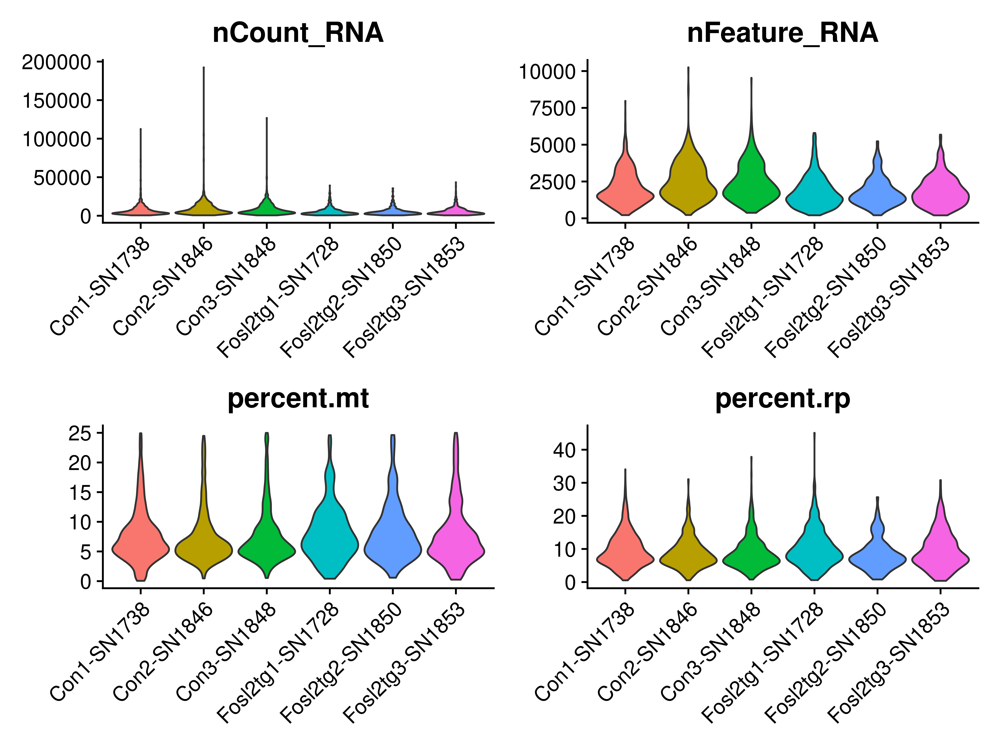
p1 <- VlnPlot(Lung, features = "nCount_RNA", group.by = "Sample", pt.size = 0, y.max = 20000) + theme(axis.title.x = element_blank()) + NoLegend()
p2 <- VlnPlot(Lung, features = "nFeature_RNA", group.by = "Sample", pt.size = 0, y.max = 5000) + theme(axis.title.x = element_blank()) + NoLegend()
p3 <- VlnPlot(Lung, features = "percent.mt", group.by = "Sample", pt.size = 0, y.max = 25) + theme(axis.title.x = element_blank()) + NoLegend()
p4 <- VlnPlot(Lung, features = "percent.rp", group.by = "Sample", pt.size = 0, y.max = 50) + theme(axis.title.x = element_blank()) + NoLegend()
QC_post_VlnPlots_zoom <- p1 + p2 + p3 + p4 + plot_layout(ncol = 2)
QC_post_VlnPlots_zoomIntegration and clustering
Normalization and scaling.
DefaultAssay(Lung) <- "RNA"
Lung_not_integrated <- Lung %>%
NormalizeData() %>%
FindVariableFeatures(selection.method = "vst", nfeatures = 2000) %>%
ScaleData(features = rownames(Lung), vars.to.regress = "percent.mt")PCA
saveRDS(Lung_not_integrated,
here::here(output_dir_data, "Lung_not_integrated.rds"))Lung_not_integrated <- readRDS(here::here(output_dir_data, "Lung_not_integrated.rds"))ElbowPlot(Lung_not_integrated, ndims = 50)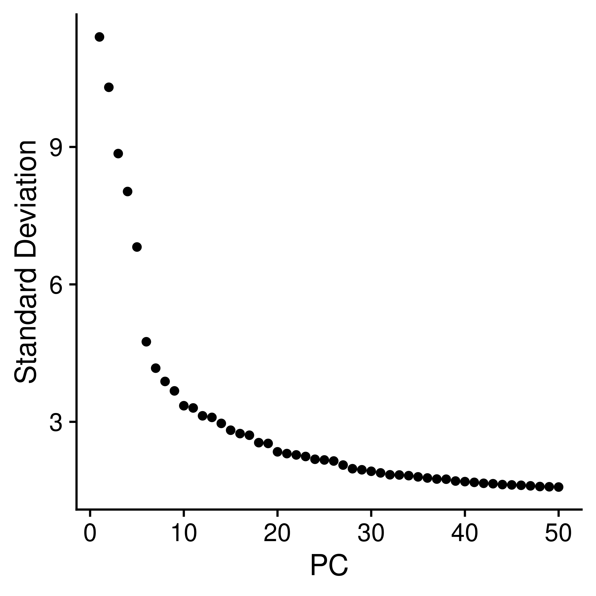
Clustering without integration
Lung_not_integrated <- RunUMAP(Lung_not_integrated, dims = 1:40)
Lung_not_integrated <- FindNeighbors(Lung_not_integrated, dims = 1:40)
Lung_not_integrated <- FindClusters(Lung_not_integrated, resolution = seq(0.1, 0.8, by=0.1))clustree::clustree(Lung_not_integrated@meta.data[,grep("RNA_snn_res", colnames(Lung_not_integrated@meta.data))],
prefix = "RNA_snn_res.")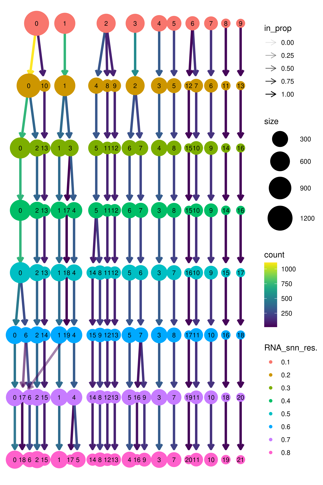
Lung_not_integrated@meta.data[Lung_not_integrated@meta.data$Sample %in% c("Con1-SN1738", "Con2-SN1846", "Con3-SN1848"), "Group"] = "WT"
Lung_not_integrated@meta.data[Lung_not_integrated@meta.data$Sample %in% c("Fosl2tg1-SN1728", "Fosl2tg2-SN1850", "Fosl2tg3-SN1853"), "Group"] = "Fosl2tg"DimPlot(Lung_not_integrated, reduction = "umap", shuffle = T,
group.by = c("RNA_snn_res.0.2", "Sample", "Group"), ncol = 3)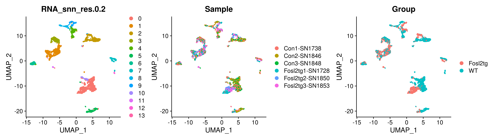
saveRDS(Lung_not_integrated,
here::here(output_dir_data, "Lung_not_integrated.rds"))Integrate the samples using Harmony
Lung_integrated <- RunHarmony(Lung_not_integrated, assay.use="RNA", group.by.vars = "Sample", dims.use = 1:50)Lung_integrated <- RunUMAP(Lung_integrated, dims = 1:40, reduction = "harmony")
Lung_integrated <- FindNeighbors(Lung_integrated, dims = 1:40, reduction = "harmony")
Lung_integrated <- FindClusters(Lung_integrated, resolution = seq(0.1, 0.8, by=0.1))saveRDS(Lung_integrated,
here::here(output_dir_data, "Lung_integrated.rds"))Lung_integrated <- readRDS(here::here(output_dir_data, "Lung_integrated.rds"))clustree::clustree(Lung_integrated@meta.data[,grep("RNA_snn_res", colnames(Lung_integrated@meta.data))],
prefix = "RNA_snn_res.")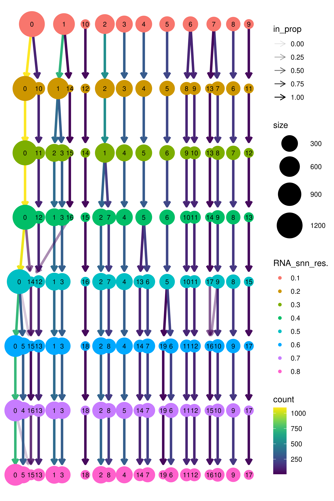
DimPlot(Lung_integrated, reduction = "umap", shuffle = T,
group.by = c("RNA_snn_res.0.2", "Sample", "Group"), ncol = 3, label = T)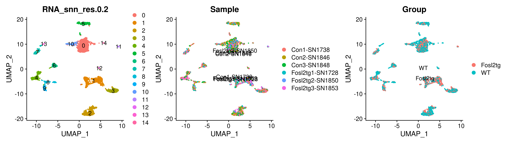
Find the markers that characterize each cell population
DefaultAssay(Lung_integrated) <- "RNA"
Idents(Lung_integrated) <- "RNA_snn_res.0.2"
Markers <- FindAllMarkers(Lung_integrated, only.pos = TRUE, min.pct = 0.5, logfc.threshold = 0.5)
write.csv(Markers, here::here(output_dir_data, "Lung_Markers_all.csv"))
Markers_top10 <- as.data.frame(Markers %>% group_by(cluster) %>% top_n(n = 10, wt = avg_log2FC))
write.csv(Markers_top10, here::here(output_dir_data, "Lung_Markers_top10.csv"))
Markers_top3 <- as.data.frame(Markers %>% group_by(cluster) %>% top_n(n = 3, wt = avg_log2FC))
write.csv(Markers_top3, here::here(output_dir_data, "Lung_Markers_top3.csv"))mapal <- colorRampPalette(RColorBrewer::brewer.pal(9,"RdBu"))(256)
mapal <- rev(mapal[1:256])
Heatmap <- DoHeatmap(Lung_integrated, draw.line = F, features = Markers_top10$gene) +
scale_fill_gradientn(colours = mapal) +
theme(text = element_text(size = 15), axis.text.y = element_text(size = 5)) +
theme(plot.margin = unit(c(0.1, 0, 0, 0),
"inches"))
Heatmap
Check QC parameters in each cluster
VlnPlot(Lung_integrated, features = c("nCount_RNA", "nFeature_RNA", "percent.mt", "percent.rp"), ncol = 2, pt.size = 0)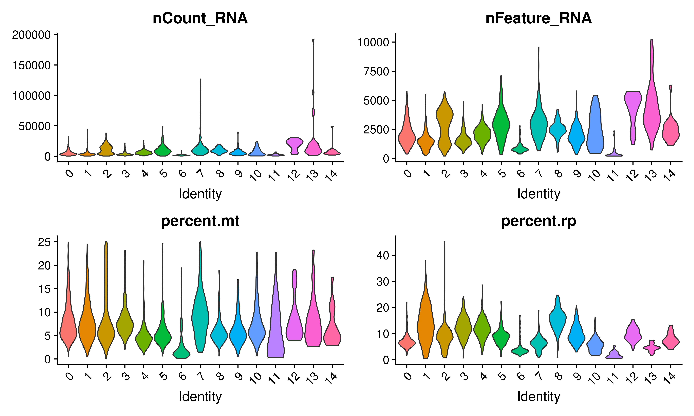
Check cell cycle genes
DefaultAssay(Lung_integrated) <- "RNA"
mmus_s = gorth(cc.genes.updated.2019$s.genes, source_organism = "hsapiens", target_organism = "mmusculus")$ortholog_name
mmus_g2m = gorth(cc.genes.updated.2019$g2m.genes, source_organism = "hsapiens", target_organism = "mmusculus")$ortholog_name
Lung_integrated <- CellCycleScoring(Lung_integrated, s.features = mmus_s, g2m.features = mmus_g2m)
DimPlot(Lung_integrated, reduction = "umap", shuffle = T,
group.by = "Phase")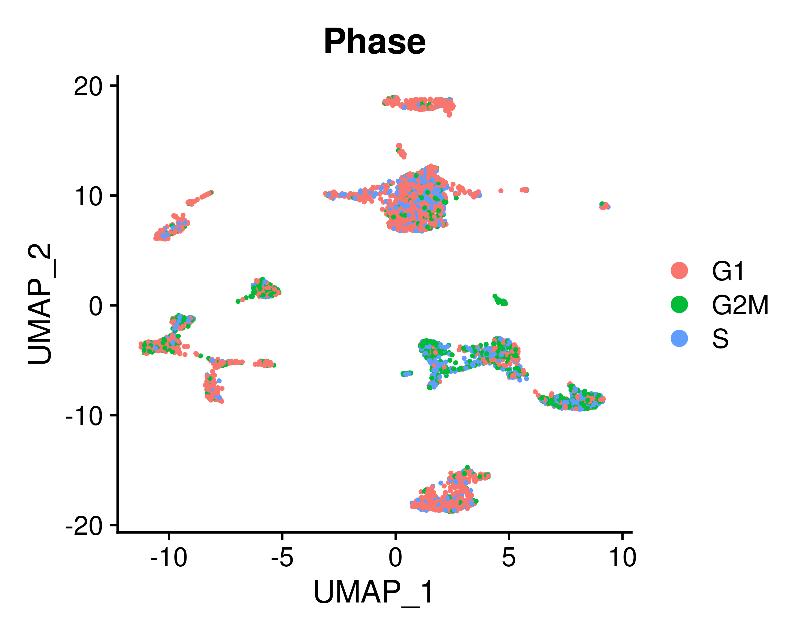
Cell type annotation
Annotate the clusters based on the characteristic markers
Lung_integrated@meta.data[Lung_integrated@meta.data$RNA_snn_res.0.2 %in% c("0"), "cell_type"] = "Endothelial cells"
Lung_integrated@meta.data[Lung_integrated@meta.data$RNA_snn_res.0.2 %in% c("1"), "cell_type"] = "T cells"
Lung_integrated@meta.data[Lung_integrated@meta.data$RNA_snn_res.0.2 %in% c("2"), "cell_type"] = "Alveolar macrophages"
Lung_integrated@meta.data[Lung_integrated@meta.data$RNA_snn_res.0.2 %in% c("3"), "cell_type"] = "B cells"
Lung_integrated@meta.data[Lung_integrated@meta.data$RNA_snn_res.0.2 %in% c("4"), "cell_type"] = "Monocytes"
Lung_integrated@meta.data[Lung_integrated@meta.data$RNA_snn_res.0.2 %in% c("5"), "cell_type"] = "Fibroblasts"
Lung_integrated@meta.data[Lung_integrated@meta.data$RNA_snn_res.0.2 %in% c("6"), "cell_type"] = "Neutrophils"
Lung_integrated@meta.data[Lung_integrated@meta.data$RNA_snn_res.0.2 %in% c("7"), "cell_type"] = "AT1/AT2 cells"
Lung_integrated@meta.data[Lung_integrated@meta.data$RNA_snn_res.0.2 %in% c("8"), "cell_type"] = "Dendritic cells"
Lung_integrated@meta.data[Lung_integrated@meta.data$RNA_snn_res.0.2 %in% c("9"), "cell_type"] = "Interstitial macrophages"
Lung_integrated@meta.data[Lung_integrated@meta.data$RNA_snn_res.0.2 %in% c("10"), "cell_type"] = "Aerocytes"
Lung_integrated@meta.data[Lung_integrated@meta.data$RNA_snn_res.0.2 %in% c("11"), "cell_type"] = "Red blod cells"
Lung_integrated@meta.data[Lung_integrated@meta.data$RNA_snn_res.0.2 %in% c("12"), "cell_type"] = "Proliferating cells"
Lung_integrated@meta.data[Lung_integrated@meta.data$RNA_snn_res.0.2 %in% c("13"), "cell_type"] = "Club/Ciliated/Basal cells"
Lung_integrated@meta.data[Lung_integrated@meta.data$RNA_snn_res.0.2 %in% c("14"), "cell_type"] = "Lymphatic cells"
Lung_integrated$cell_type <- factor(Lung_integrated$cell_type, levels = c("Endothelial cells",
"T cells",
"Alveolar macrophages",
"B cells",
"Monocytes",
"Fibroblasts",
"Neutrophils",
"AT1/AT2 cells",
"Dendritic cells",
"Interstitial macrophages",
"Aerocytes",
"Red blod cells",
"Proliferating cells",
"Club/Ciliated/Basal cells",
"Lymphatic cells"))
Idents(Lung_integrated) <- Lung_integrated$cell_typeDefaultAssay(Lung_integrated) <- "RNA"
Idents(Lung_integrated) <- "cell_type"
Markers <- FindAllMarkers(Lung_integrated, only.pos = TRUE, min.pct = 0.5, logfc.threshold = 0.5)
write.csv(Markers, here::here(output_dir_data, "Lung_Markers_all_cell_type.csv"))
Markers_top10 <- as.data.frame(Markers %>% group_by(cluster) %>% top_n(n = 10, wt = avg_log2FC))
write.csv(Markers_top10, here::here(output_dir_data, "Lung_Markers_top10_cell_type.csv"))
Markers_top3 <- as.data.frame(Markers %>% group_by(cluster) %>% top_n(n = 3, wt = avg_log2FC))
write.csv(Markers_top3, here::here(output_dir_data, "Lung_Markers_top3_cell_type.csv"))mapal <- colorRampPalette(RColorBrewer::brewer.pal(9,"RdBu"))(256)
mapal <- rev(mapal[1:256])
Heatmap <- DoHeatmap(Lung_integrated, label = FALSE, draw.line = F, features = Markers_top10$gene) +
scale_fill_gradientn(colours = mapal) +
theme(text = element_text(size = 12),
axis.text.y = element_text(size = 4.5)) +
theme(plot.margin = unit(c(0, 0, 0, 0), "inches")) +
guides(fill = guide_colorbar(barwidth = 1, barheight = 4))
Heatmap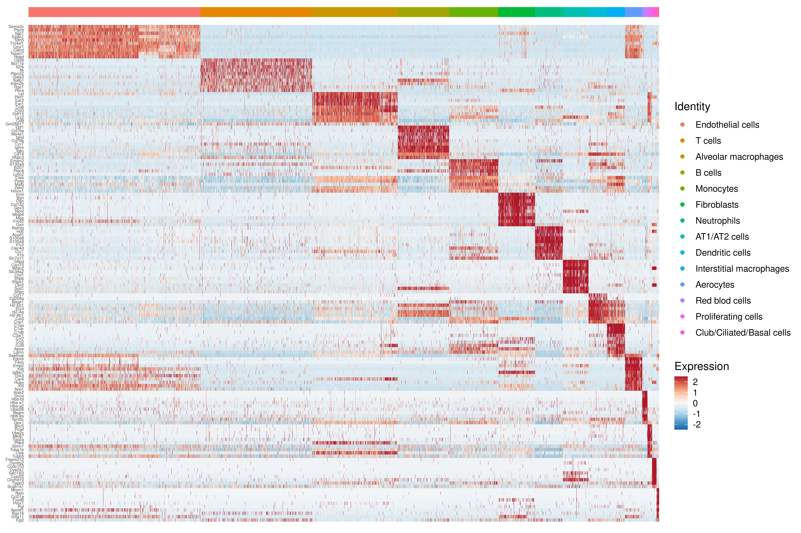
p <- DimPlot(Lung_integrated, group.by = "cell_type", reduction = "umap", label = F, shuffle = T) +
NoLegend() +
theme(axis.text=element_text(size=16, face = "bold"), axis.title = element_text(size = 20, face = "bold")) +
theme(plot.title = element_blank())
LabelClusters(p, id = "cell_type", fontface = "bold", size = 4, repel = T)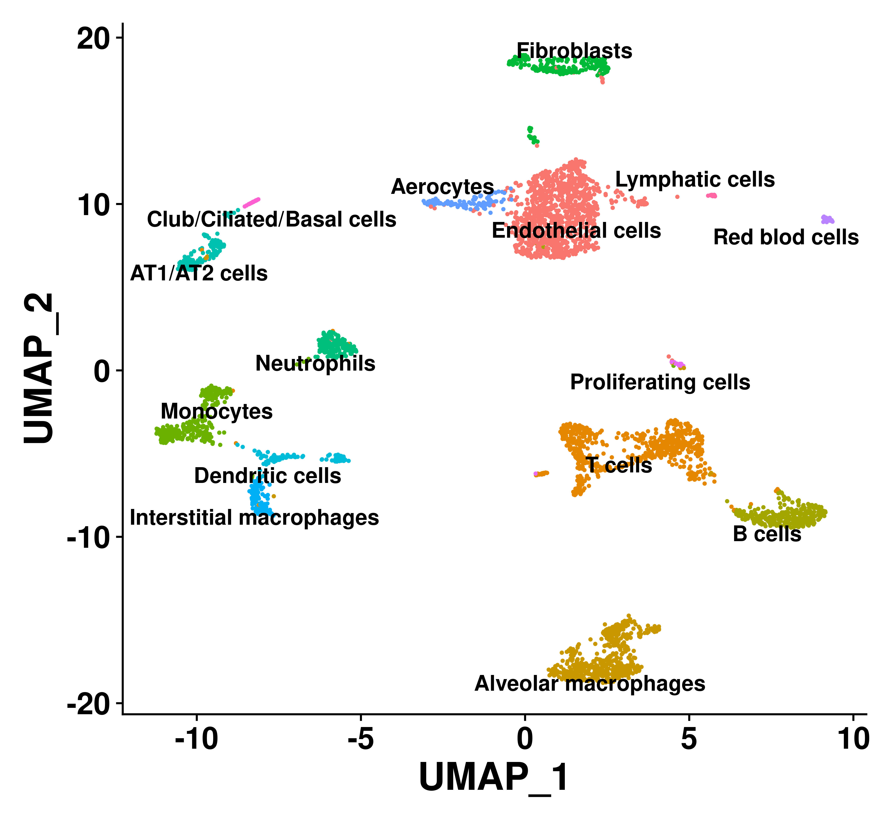
DotPlot(Lung_integrated, assay = "RNA", features = rev(Markers_top3$gene), dot.scale = 5, cluster.idents = FALSE) +
RotatedAxis() +
coord_flip() +
theme(axis.title = element_blank(), axis.text.x = element_text(size = 14), axis.text.y = element_text(size = 13), legend.text = element_text(size = 9), legend.title = element_text(size = 11), plot.margin = unit(c(0, 0, 0, 0.1),
"inches"))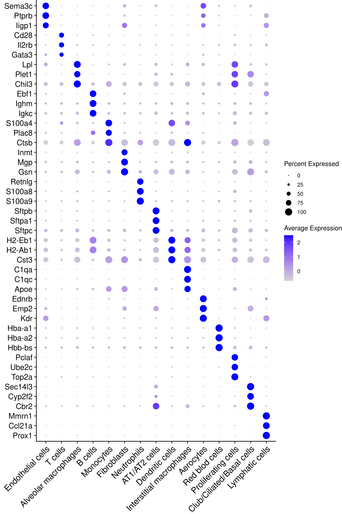
FeaturePlot(Lung_integrated, features = c("Ptprb", "Cd28", "Lpl", "Ms4a1", "Ly6c2", "Col1a2", "S100a8", "Sftpc", "Ccl17", "C1qa", "Ednrb","Hba-a1", "Top2a", "Cyp2f2", "Mmrn1", "Lyz2", "Nkg7", "Ager", "Aqp5", "Itgax", "Ccr2", "Plac8", "Cd163", "Mrc1", "Scgb1a1", "Foxj1", "Muc5ac", "Krt5"), ncol = 7)
saveRDS(Lung_integrated,
here::here(output_dir_data, "Lung_integrated.rds"))
sessionInfo()R version 4.3.1 (2023-06-16)
Platform: x86_64-pc-linux-gnu (64-bit)
Running under: Ubuntu 22.04.4 LTS
Matrix products: default
BLAS: /usr/lib/x86_64-linux-gnu/openblas-pthread/libblas.so.3
LAPACK: /usr/lib/x86_64-linux-gnu/openblas-pthread/libopenblasp-r0.3.20.so; LAPACK version 3.10.0
locale:
[1] LC_CTYPE=en_US.UTF-8 LC_NUMERIC=C
[3] LC_TIME=en_US.UTF-8 LC_COLLATE=en_US.UTF-8
[5] LC_MONETARY=en_US.UTF-8 LC_MESSAGES=en_US.UTF-8
[7] LC_PAPER=en_US.UTF-8 LC_NAME=en_US.UTF-8
[9] LC_ADDRESS=en_US.UTF-8 LC_TELEPHONE=en_US.UTF-8
[11] LC_MEASUREMENT=en_US.UTF-8 LC_IDENTIFICATION=en_US.UTF-8
time zone: Etc/UTC
tzcode source: system (glibc)
attached base packages:
[1] stats4 stats graphics grDevices utils datasets methods
[8] base
other attached packages:
[1] gprofiler2_0.2.3 clustree_0.5.1
[3] ggraph_2.2.1 statmod_1.5.0
[5] patchwork_1.2.0 scater_1.30.1
[7] scuttle_1.12.0 Matrix.utils_0.9.7
[9] RColorBrewer_1.1-3 scales_1.3.0
[11] knitr_1.45 gridExtra_2.3
[13] png_0.1-8 pheatmap_1.0.12
[15] reshape2_1.4.4 lubridate_1.9.3
[17] forcats_1.0.0 stringr_1.5.1
[19] purrr_1.0.2 tidyr_1.3.1
[21] tibble_3.2.1 tidyverse_2.0.0
[23] harmony_1.2.0 Rcpp_1.0.12
[25] magrittr_2.0.3 ggplot2_3.5.0
[27] dplyr_1.1.4 scCustomize_2.1.2
[29] scDblFinder_1.16.0 Matrix_1.6-5
[31] DropletUtils_1.22.0 SingleCellExperiment_1.24.0
[33] SummarizedExperiment_1.32.0 Biobase_2.62.0
[35] GenomicRanges_1.54.1 GenomeInfoDb_1.38.7
[37] IRanges_2.36.0 S4Vectors_0.40.2
[39] BiocGenerics_0.48.1 MatrixGenerics_1.14.0
[41] matrixStats_1.2.0 SeuratObject_5.0.2
[43] Seurat_4.4.0 xlsx_0.6.5
[45] readxl_1.4.3 readr_2.1.5
[47] here_1.0.1
loaded via a namespace (and not attached):
[1] fs_1.6.3 spatstat.sparse_3.0-3
[3] bitops_1.0-7 httr_1.4.7
[5] backports_1.4.1 tools_4.3.1
[7] sctransform_0.4.1 utf8_1.2.4
[9] R6_2.5.1 HDF5Array_1.30.1
[11] lazyeval_0.2.2 uwot_0.1.16
[13] rhdf5filters_1.14.1 withr_3.0.0
[15] sp_2.1-3 progressr_0.14.0
[17] cli_3.6.2 spatstat.explore_3.2-6
[19] labeling_0.4.3 sass_0.4.9
[21] spatstat.data_3.0-4 ggridges_0.5.6
[23] pbapply_1.7-2 Rsamtools_2.18.0
[25] R.utils_2.12.3 parallelly_1.37.1
[27] limma_3.58.1 rstudioapi_0.15.0
[29] generics_0.1.3 shape_1.4.6.1
[31] BiocIO_1.12.0 ica_1.0-3
[33] spatstat.random_3.2-3 ggbeeswarm_0.7.2
[35] fansi_1.0.6 abind_1.4-5
[37] R.methodsS3_1.8.2 lifecycle_1.0.4
[39] whisker_0.4.1 yaml_2.3.8
[41] edgeR_4.0.16 snakecase_0.11.1
[43] rhdf5_2.46.1 SparseArray_1.2.4
[45] Rtsne_0.17 paletteer_1.6.0
[47] grid_4.3.1 promises_1.2.1
[49] dqrng_0.3.2 crayon_1.5.2
[51] miniUI_0.1.1.1 lattice_0.22-5
[53] beachmat_2.18.1 cowplot_1.1.3
[55] xlsxjars_0.6.1 pillar_1.9.0
[57] metapod_1.10.1 rjson_0.2.21
[59] xgboost_1.7.7.1 future.apply_1.11.1
[61] codetools_0.2-19 leiden_0.4.3.1
[63] glue_1.7.0 data.table_1.15.2
[65] vctrs_0.6.5 spam_2.10-0
[67] cellranger_1.1.0 gtable_0.3.4
[69] rematch2_2.1.2 cachem_1.0.8
[71] xfun_0.42 S4Arrays_1.2.1
[73] mime_0.12 tidygraph_1.3.1
[75] survival_3.5-8 rJava_1.0-11
[77] bluster_1.12.0 ellipsis_0.3.2
[79] fitdistrplus_1.1-11 ROCR_1.0-11
[81] nlme_3.1-164 bit64_4.0.5
[83] RcppAnnoy_0.0.22 rprojroot_2.0.4
[85] bslib_0.6.1 irlba_2.3.5.1
[87] vipor_0.4.7 KernSmooth_2.23-22
[89] colorspace_2.1-0 ggrastr_1.0.2
[91] tidyselect_1.2.1 bit_4.0.5
[93] compiler_4.3.1 git2r_0.33.0
[95] BiocNeighbors_1.20.2 hdf5r_1.3.10
[97] DelayedArray_0.28.0 plotly_4.10.4
[99] rtracklayer_1.62.0 checkmate_2.3.1
[101] lmtest_0.9-40 digest_0.6.35
[103] goftest_1.2-3 spatstat.utils_3.1-0
[105] rmarkdown_2.26 XVector_0.42.0
[107] htmltools_0.5.8.1 pkgconfig_2.0.3
[109] sparseMatrixStats_1.14.0 highr_0.10
[111] fastmap_1.1.1 rlang_1.1.4
[113] GlobalOptions_0.1.2 htmlwidgets_1.6.4
[115] shiny_1.8.0 DelayedMatrixStats_1.24.0
[117] farver_2.1.1 jquerylib_0.1.4
[119] zoo_1.8-12 jsonlite_1.8.8
[121] BiocParallel_1.36.0 R.oo_1.26.0
[123] BiocSingular_1.18.0 RCurl_1.98-1.14
[125] GenomeInfoDbData_1.2.11 dotCall64_1.1-1
[127] Rhdf5lib_1.24.2 munsell_0.5.0
[129] viridis_0.6.5 reticulate_1.35.0
[131] stringi_1.8.3 zlibbioc_1.48.0
[133] MASS_7.3-60.0.1 plyr_1.8.9
[135] parallel_4.3.1 listenv_0.9.1
[137] ggrepel_0.9.5 deldir_2.0-4
[139] graphlayouts_1.1.1 Biostrings_2.70.2
[141] splines_4.3.1 tensor_1.5
[143] hms_1.1.3 circlize_0.4.16
[145] locfit_1.5-9.9 igraph_2.0.3
[147] spatstat.geom_3.2-9 ScaledMatrix_1.10.0
[149] XML_3.99-0.16.1 evaluate_0.23
[151] scran_1.30.2 ggprism_1.0.4
[153] tweenr_2.0.3 tzdb_0.4.0
[155] httpuv_1.6.14 grr_0.9.5
[157] RANN_2.6.1 polyclip_1.10-6
[159] future_1.33.1 scattermore_1.2
[161] ggforce_0.4.2 janitor_2.2.0
[163] rsvd_1.0.5 xtable_1.8-4
[165] restfulr_0.0.15 later_1.3.2
[167] viridisLite_0.4.2 memoise_2.0.1
[169] beeswarm_0.4.0 GenomicAlignments_1.38.2
[171] cluster_2.1.6 workflowr_1.7.1
[173] timechange_0.3.0 globals_0.16.3